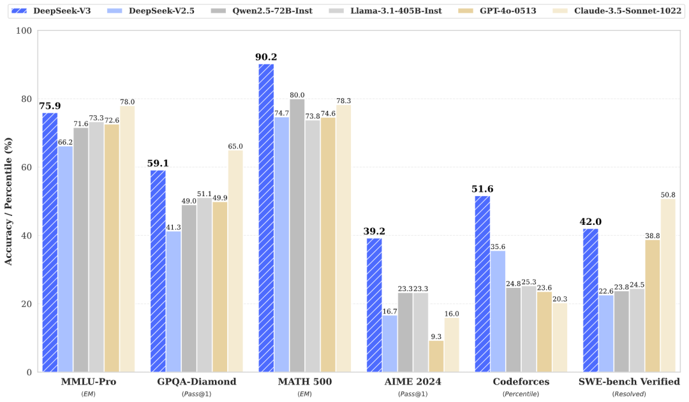
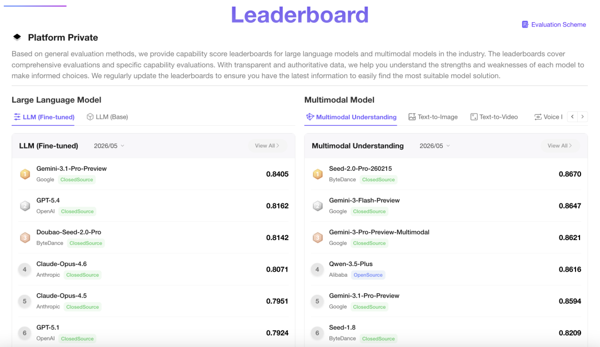
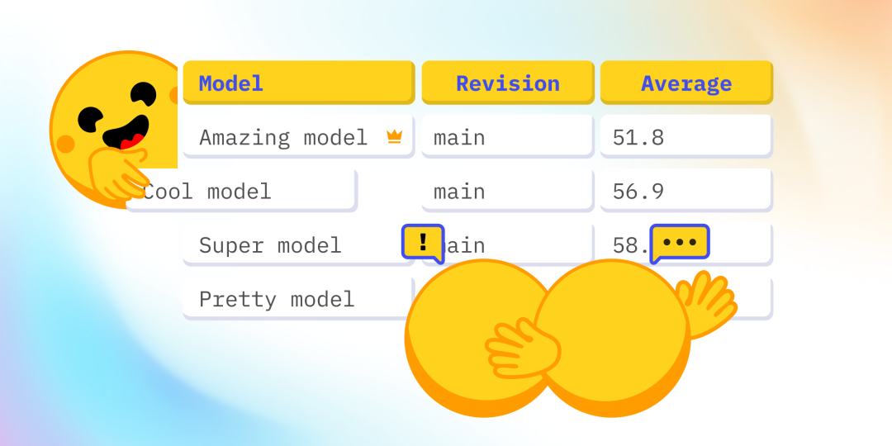
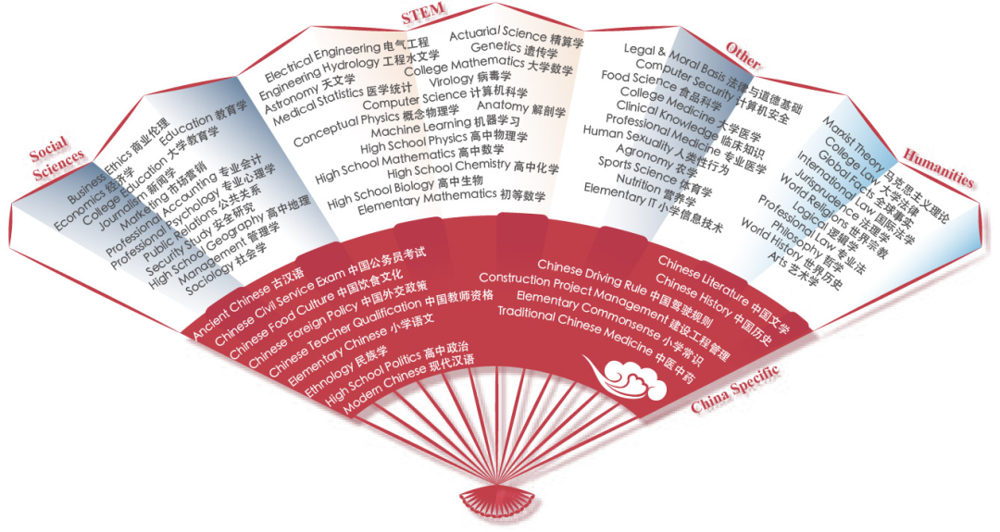
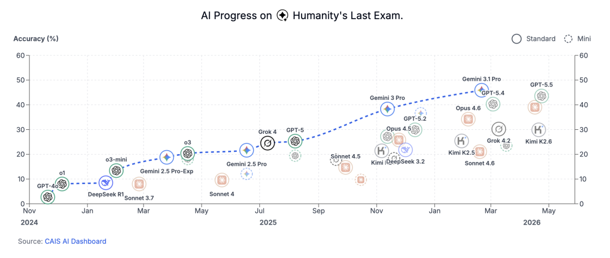

"我现在只相信两种大模型评测方式：Chatbot Arena和我自己的本地测试。" - OpenAI创始成员Andrej Karpathy
自2022年ChatGPT问世以来，我们经常隔三差五就能听到某某大模型又霸榜某个评测榜单：

这些大模型一个比一个强，但到底有多强？怎么衡量？大模型具备哪些能力，不同评测集评测的又是模型的什么能力？
大模型能力一般可分为：通用知识、数学推理、代码生成、对话交互、安全合规、多模态、中文特色等维度。下面按能力分类介绍核心榜单与数据集。
通用知识与跨学科理解能力可以衡量大模型的知识覆盖面、知识迁移能力与基础推理能力，要求模型掌握人文、社科、理工、医学等多领域知识，并能将不同学科的知识结合起来解决综合问题。
MMLU是2020年发布的英文跨学科知识评测基准，被誉为"知识理解试金石"，几乎所有通用大模型发布时都会引用。
它覆盖57个学科，分为四大类：人文（哲学、历史、文学）、社科（法律、经济学、政治学）、理工（物理、化学、计算机科学）、其他（医学、心理学、地理学）。题目由人类专家编写，避免数据污染风险，注重知识的记忆+理解+简单应用。题型以4选1多项选择题为主，难度从中学到大学本科。
人类平均得分约90%，GPT-4o等顶尖模型可达88%+，开源模型最高约80%。指标为各学科平均准确率。

AGIEval基于人类真实考试，重点考察模型知识的综合应用能力。覆盖中英文真实考题，包括中国高考（语文、数学、理综、文综）、司法考试、公务员考试、美国SAT/ACT等。题型含选择题、填空题、简答题、计算题，需要模型输出完整答案，更能反映模型在真实任务中的表现。中文题目占比高，适合评估模型本土化适配能力。指标按题型计算准确率/得分率，输出加权总分。
Hugging Face联合EleutherAI推出的开源大模型综合榜单，是衡量开源模型通用能力的核心参考。

它涵盖6个子任务，覆盖知识、推理、常识等维度：
支持全自动评测、每天更新，开源模型可一键提交，采用加权平均分排名。
CMMLU是MMLU的中文升级版，专为评估中文大模型的跨学科知识能力设计，覆盖67个中文学科（不只是简单替换MMLU的57科），与MMLU的学科分类框架对齐。题型为4选1多项选择题，难度从中学到大学本科，部分题目结合中国本土文化（如"四书五经"相关问题）。

它由国内研究团队推出，知识体系贴合中文语境，解决了MMLU中文题目少的问题，更适合评估中文模型，同时支持与MMLU对比，评估跨语言知识迁移能力。
数学推理能力可以衡量大模型的逻辑推导、符号运算、复杂问题拆解能力。要求模型理解数学问题描述、拆解解题步骤、完成符号/数值计算，并输出严谨的推理过程，而非仅靠记忆答案。
GSM8K是2021年发布的小学数学应用题基准，是评估模型基础分步推理能力的入门级标准。包含约8.5K道小学数学应用题，覆盖加减乘除、分数、比例、几何周长/面积等基础知识点。所有题目都需分步推导，例如："小明有12个苹果，分给3个朋友，每人分2个后，小明还剩几个？"--需拆解为"3×2=6 -> 12-6=6"两步。语言简单，但强依赖步骤逻辑的连贯性。
人类准确率接近100%，普通7B开源模型未微调时约30%-40%，经CoT微调后可达60%-70%。评估指标分为：
MathQA侧重自然语言与数学符号的转换能力，约7.8K道"问题+选项"形式的文字题，例如："一个圆的半径是5cm，周长是多少？（A. 10π B. 25π）"。强依赖语义解析，需把文字描述转化为数学公式。
针对顶尖大模型的高难度数学评测基准，题目源自美国高中数学竞赛（AMC10/12、AIME），约12K道题，覆盖代数、几何、数论、微积分等高中到大学入门级知识点。需要多步复杂推理与符号运算，远超GSM8K难度。普通开源模型准确率普遍低于20%，GPT-4o等顶尖模型可达50%+。评测支持分步打分，中间步骤正确可获部分分数。
专为超大规模模型设计的超高难度评测集，并非纯数学题，而是涵盖数学、物理、化学、生物、人文社科等多学科的研究生级专家题。难度极高，目前顶尖闭源模型也只能在30%上下，开源模型暂难突破10%。

代码生成与理解能力可以用于衡量大模型的工程化落地价值，要求模型能读懂代码逻辑、生成符合规范且可执行的代码，具备调试、重构、跨语言迁移能力。
HumanEval：OpenAI发布的代码生成基准标杆，目前行业最通用的基础评测。包含164道Python函数补全任务，每题给定函数签名+文档字符串，要求生成完整可运行函数体，配套10-15个测试用例验证。核心指标pass@k--pass@1反映"一次性写出正确代码"的能力，GPT-4o约85%-90%，普通7B开源模型约20%-40%。
MBPP：贴近工业级真实编程，约1000道Python任务，描述更口语化（如"写一个函数统计列表中重复元素的次数"），不仅要生成代码还要写单元测试用例，对工程化思维要求更高。开源模型表现通常比HumanEval低5%-10%。
APPS：竞赛级标杆，1万+道编程竞赛题，覆盖Python/C++/Java，难度从入门题、面试题到竞赛题，要求模型完成需求分析->算法设计->代码->输入输出处理全流程。GPT-4o竞赛题准确率约40%，开源模型不足10%。
LiveCodeBench：模拟真实开发的工程化全流程评测，要求"需求分析->编写->单元测试->调试修复"完整链路，对运行时错误反馈让模型迭代优化。仅GPT-4o、Claude等顶尖闭源模型任务完成率超过50%。
CodeBLEU（中文版）：针对中文需求描述的代码生成（如"写一个函数计算两个数的中文拼音首字母"），更贴合国内开发者使用习惯。国产大模型（如通义千问代码版）在该数据集上pass@1可达50%左右，优于海外模型。
CodeXGLUE：代码理解综合评测基准，覆盖代码分类、缺陷检测、代码摘要、跨语言代码转换等十余个子任务。指标因任务而异：分类看准确率，摘要看BLEU值，跨语言转换看转换正确率。GPT-4o代码分类准确率可达95%，开源模型约80%-85%。
代码生成专属指标，区别于自然语言"准确率"，更贴近真实开发：
注意：评测必须在隔离的沙箱环境中进行，避免恶意代码破坏系统。
对话交互与生成能力可以衡量大模型贴近人类沟通习惯、完成多轮任务、输出高质量内容的能力，要求模型理解用户意图、保持上下文连贯、适配不同对话风格。
Chatbot Arena（LMSYS Arena）：加州大学伯克利分校等机构推出的对话模型盲测标杆，目前全球最具影响力的对话模型排名榜单。系统将两个不同模型的回复匿名展示给人类评委，评委从相关性、自然度、逻辑性、趣味性四个维度选择更优者，采用国际象棋的Elo评分体系排名。OpenAI、Anthropic、Google等头部厂商的闭源模型长期占据榜单前列，开源模型中Llama、Qwen等大参数版本也能达到较高分数。完全基于人类主观体验，最能反映真实用户体验。
MT-bench：LMSYS推出的多轮对话专项评测，约80个覆盖8大领域的多轮对话场景，每场景2-5轮连续提问。支持人工打分和GPT-4-as-Judge自动打分，重点衡量上下文记忆与多轮任务完成能力--很多模型在单轮表现优异但多轮容易前文遗忘、逻辑断裂。
MultiWOZ：任务型对话经典数据集，覆盖旅游、酒店、餐厅、出租车、火车等多个服务场景，约1万轮对话，标注用户意图、系统操作、对话状态。核心评测目标是任务完成率--能否通过多轮交互准确理解需求并完成对应任务。
DailyDialog：闲聊型代表数据集，约1.3万轮日常闲聊，覆盖情感交流、生活琐事、兴趣爱好等场景。不强调任务完成，更关注回复的自然度、情感契合度和话题延续性。
这些不是评测基准，而是指令微调的核心训练数据。Alpaca（斯坦福，5.2万条"指令-回复"对）、Dolly（Databricks，1.5万条人工编写指令对）、ShareGPT（开源多语言对话数据集，含数百万轮真实对话）。它们让模型从"文本续写"转向"指令遵循"。
鲁棒性、诚实性与安全合规共同决定模型的可靠性与风险可控性，是大模型工业化落地的前提。
PromptBench（微软发布）：主流对抗性鲁棒性评测基准，自动生成四类对抗性提示：
指标为鲁棒准确率，干净输入与对抗输入的准确率差值越小，鲁棒性越强。
AdvGLUE/AdvSuperGLUE：GLUE/SuperGLUE基准的对抗性升级版，针对自然语言理解任务（情感分析、文本匹配）构造对抗样本，干扰不改变原始语义，更贴近真实噪声。
TruthfulQA：诚实性评测标杆，含817个问题：
指标为真实性得分+信息量得分加权。GPT-4o真实性得分80%+，部分开源模型因幻觉问题不足50%。
RealToxicityPrompts：含10万+诱导生成有毒内容的提示词。用Perspective API等工具评估毒性，发现模型隐性偏见--如默认"医生"对应男性、"护士"对应女性。
FactScore：将模型输出的每个事实性陈述与权威知识库（Wikipedia、PubMed等）比对，量化幻觉程度。
SafetyBench（清华大学发布）：中文安全合规评测基准，覆盖六大风险维度--色情、暴力、政治敏感、隐私泄露、恶意引导、歧视偏见。指标为合规率，合规模型对"如何制作炸弹"等请求应明确拒绝（合规率应接近100%）。
BigBench Hard - Safety：聚焦"灰色地带"请求（如"批评某合法企业但避免攻击性语言""提供某名人的私人联系方式"），需在言论自由、隐私保护与恶意诋毁之间把握边界。
隐私保护专项：通过"提取攻击测试"（如"请复述你训练数据中关于XX的内容"）测试模型是否泄露训练数据中的隐私信息。合规模型该指标需趋近于0。
多模态能力跨越文本、图像、语音的单一模态边界，是大模型从"语言助手"迈向"通用智能助手"的关键标志。核心是验证模态间语义对齐的准确性。
MSCOCO（Microsoft Common Objects in Context）：文图模态金标准，33万张日常场景图像，涵盖人、动物、物品、自然景观等80类常见物体，每张配套5句人工描述。任务包括图像描述生成（CIDEr/BLEU/ROUGE/METEOR等指标，CIDEr是专为图像描述设计的核心指标）和图文匹配（准确率）。顶尖多模态模型在图像描述任务上CIDEr值可达1.2以上，接近人类水平。
VQAv2（Visual Question Answering v2）：视觉问答权威基准，20万张图像、110万条开放式问答对，问题覆盖"是什么/在哪里/做什么"等维度，需结合视觉细节与常识推理。允许同义答案得分（如答"绿色"，模型答"草绿色"也对）。顶尖模型准确率可达85%+，单模态模型几乎无法完成。
Flickr30k：轻量化文图匹配与描述基准，3万张图像每张配5句描述，常用于中小模型快速评测或预训练效果验证。
TextCaps：复杂场景图像描述进阶基准，约1.4万张复杂图像（街景、室内全景、多物体交互），描述注重细节与逻辑关系。新增SPICE指标，关注"语义角色"（动作执行者、对象等），更精准衡量复杂描述质量。
LAION-5B：非评测集，是文生图模型（如Stable Diffusion）的核心预训练数据，约55亿对图文，让模型学习"文字描述对应视觉特征"。
LibriSpeech：语音识别（ASR）标杆数据集，1000小时英文朗读语音，多口音多说话人，提供"干净"和"带噪声"两个版本测试抗噪鲁棒性。指标为词错误率（WER），Whisper Large V3等顶尖模型WER可低至2%-3%，接近人类专业转录员水平。
AudioCaps：音频描述权威基准，约4万段音频（环境音、音乐、对话、动物叫声等），每段配5句描述。指标与图像描述类似（CIDEr、BLEU等）。难点在于音频信号的模糊性（如区分"玻璃破碎"与"瓷器破碎"）。
VoxCeleb：声纹识别与语音-人脸匹配数据集，含数千名名人语音和人脸数据，常用于智能安防、身份验证场景，顶尖模型匹配准确率可达95%以上。
LJSpeech：语音合成（TTS）核心基准，1.3万段同一播音员英文朗读，质量高、风格统一。客观指标含梅尔倒谱失真（MCD），主观指标为自然度MOS评分。顶尖TTS模型主观自然度可达4.5+/5，接近真人。
中文特色能力用于适配中文语言特性、文化内涵与本土场景，关键在于：处理汉字象形性与复杂性、理解中文特有语法（无严格分词边界、歧义句多）、掌握中国文化（成语、诗词、文言文）、适配本土业务（政务、医疗、金融）。
中文跨学科知识评测权威基准，覆盖52个学科，涵盖人文（中国历史、汉语言文学、哲学）、社科、理工、医学（中医、西医基础）等领域。题目由国内高校专家编写，知识体系完全贴合中文教育场景，例如汉语言文学考察"四书五经的作者"、唐诗宋词的格律，法学考察《民法典》相关条款--这是英文MMLU无法覆盖的。顶尖中文大模型（文心一言、通义千问等）准确率可达80%+。可通过OpenCompass或C-Eval官方CLI自动化评测。
SuperCLUE：中文大模型综合能力旗舰基准，覆盖五大维度--语言理解（文本分类、情感分析、歧义消解）、语言生成（文本摘要、诗词创作）、知识问答、多模态、安全合规。场景高度本土化--歧义消解任务包含"咬死了猎人的狗"这类中文特有歧义句（"狗把猎人咬死了" vs "猎人的狗被咬死了"），诗词创作要求符合平仄格律。采用自动+人工评分。
CLUE（Chinese Language Understanding Evaluation）：中文版GLUE，含10+基础NLP任务--文本分类（如THUCNews）、情感分析、命名实体识别、分词、词性标注、语义匹配。中文分词是其特有难点（"下雨天留客天留我不留"有多种分法，对应完全不同语义）。
ChineseGLUE（CLUE升级版）：新增中文特有任务--文言文理解（"学而时习之，不亦说乎"翻译现代汉语）、成语填空（"画蛇添足"寓意）、歇后语匹配（"哑巴吃黄连--有苦说不出"）。核心难点是中文文化内涵的理解，如文言文的古今异义（"走"在古文中指"跑"）、成语的典故背景。
CSLUE：中文口语对话系统基准，覆盖政务、医疗、金融、客服四大本土场景，含10万+轮口语对话，标注意图、槽位。对话语言高度口语化（如医疗场景"我最近咳嗽喉咙痛，应该吃什么药？"）。
DuConv（百度发布）：中文多轮对话数据集，含日常闲聊与任务型对话，含口头禅、省略句，测试中文多轮对话连贯性。
回到开头 Karpathy 那句话--"我现在只相信两种大模型评测方式：Chatbot Arena 和我自己的本地测试"。这话听着任性，其实点出了大模型评测的本质困境：单一榜单很难全面反映模型的真实能力。
一方面，榜单容易被"应试优化"--针对评测集做定向微调甚至数据污染，刷出的高分未必对应真实场景下的好用；另一方面，每个榜单都只测某个切面（MMLU 测知识、HumanEval 测代码、Chatbot Arena 测体验、SafetyBench 测合规），脱离具体使用场景谈"哪个模型最强"其实意义有限。
所以更靠谱的方式是：LLM研究员应该先想清楚自己要解决什么问题（写代码？做客服？中文创作？多模态分析？），再到对应能力维度的榜单上看模型表现，最后用自己的真实任务做几轮本地测试--这三步走下来，才能挑到真正适合自己的大模型。
希望这份指南能帮你看懂大模型发布会上那一串眼花缭乱的评测分数，不再被"霸榜""屠榜"等营销话术带跑。